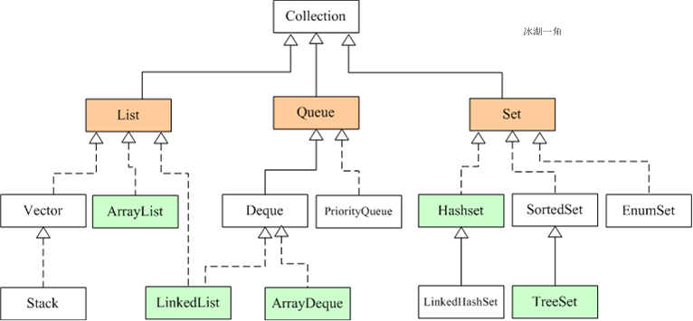
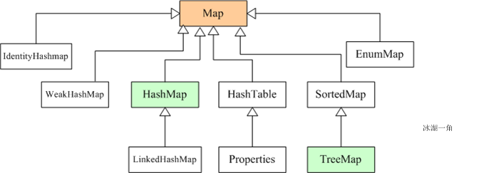
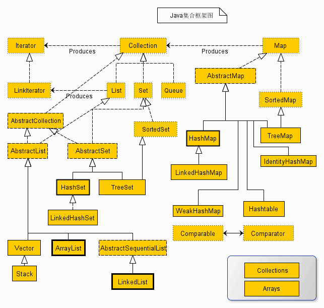

摘要：Java 高级之集合框架/容器类，包括 List、Queue、Set、Map。
[TOC]
集合框架（容器类）
所有集合类都位于 java.util 包下，用于表示和操作对象集合，包含大量集合接口及其实现类和操作算法。
集合类 VS 数组：
各种实现类的底层实现原理、实现类的优缺点。
重写toString()来打印内容，否则默认打印地址。
singleton() 方法：
Long orderId;
Collection<Long> orderIds = singleton(orderId);


List、Queue、Set 接口继承自 Collection 接口：
public interface List<E> extends Collection<E> {}
List：有序、可重复，允许多个 null 元素；可用 iterator 遍历或 get(index) 随机访问特定元素；Queue：有序、可重复，允许多个 null 元素；先进先出，用于排队；Set：无序、不可重复，最多只能有一个 null 元素；只可用 iterator 遍历；Map：无序、key 不可重复 value 可重复，允许一个 key 和多个 value 为 null。
ArrayList 类
CopyOnWrite（COW）并发容器
CopyOnWriteArrayList：绝对线程安全，在读多写少的场合性能非常好，远远好于 Vector；CopyOnWriteArraySetLinkedList 类Vector 类
Stack 类：
Stack<Integer> stack = new Stack<>()Deque<Integer> stack = new ArrayDeque<>() 来实现，效率更高。Deque 双端队列接口：同时实现了栈和队列的功能；
LinkedList 类ArrayQueue 类：Object[] 数组 + 双指针；Pri'orityQueue 类，优先级队列、非阻塞式：用 Object[] 数组实现二叉堆；BlockingQueue 阻塞队列：非常适合用于作为数据共享的通道；并发
workqueue 参数传入构造器 ThreadPoolExecutor() 创建线程池；ArrayBlockingDeque 类LinkedBlockingDeque 类：同时实现了 Deque；ConcurrentLinkedQueue : 高效的并发队列，是非阻塞队列，用链表实现。可看做线程安全的 LinkedList。HashSet 类：实现了 Set 接口，存储对象；底层基于 HashMap、但有键无值；元素不可重复，最多只能有一个null元素；用 add() 添加元素、contains()；
LinkedHashSet 类：（基于LinkHashMap、但有键无值，）有序（能按元素的添加顺序遍历）；TreeSet 类：实现了 Set 和 SortedSet 接口；底层基于 TreeMap、但有键无值。HashMap 类：实现了Map接口，存储键值对；底层是 数组和链表（链表散列/链表数组，用于解决哈希冲突）；键不可重复、值可重复，允许一个 key 和多个 value 为null；用 put() 添加元素、containsKey()；比 HashSet 快（因为是使用唯一的键来获取对象）；非线程安全；
LinkedHashMap 类：JDK1.8 后在解决哈希冲突时先进行数组扩容；ConcurrentHashMap 类：线程安全的 HashMap，JDK1.8底层采用数组+链表/红黑二叉树实现。
volatile（窝le滔）修饰的，保证了获取时的可见性；key 和 value 都不允许为 null。ConcurrentSkipListMap : 跳表的实现。是一个 Map，用跳表的数据结构进行快速查找。HashTable 类TreeMap 类：实现 SortMap 接口；基于红黑树（自平衡的排序二叉树）=> 对8个包装类、String 根据 Key 自动升序（默认从大到小）排序，可定制排序方式；| 集合类 | Key | Value | Super | 说明 |
|---|---|---|---|---|
| 1. HashMap | 允许一个为null | 允许为null | AbstractMap | 线程不安全 |
| 1.2 ConcurrentHashMap | 不允许为null | 不允许为null | AbstractMap | 分段锁技术 |
| 2. |
不允许为null | 不允许为null | Dictionary | 线程安全 |
| 3. TreeMap | 不允许为null | 允许为null | AbstractMap | 线程不安全 |
List中没有而ArrayList中独有的方法不能被List对象使用，即多态。
用多态方式调用方法时：先检查父类中是否有该方法，
//ConcurrentMap 中
putIfAbsent() //
注意，以下都是线程不安全的：
ArrayList, LinkedListHashSet, TreeSetHashMap, TreeMap见多线程文档中#实现线程安全的方法#使用线程安全的集合、并发容器类。
使用线程安全的集合、并发容器类：
CopyOnWriteArrayListBlockingQueue、ConcurrentLinkedQueue、ConcurrentHashMap、ConcurrentSkipListMap 、Collections.synchorizedList同步容器。// 获得订单列表
List<TradeOrderDO> orders = tradeOrderMapper.selectListByUserIdAndActivityId(userId, activityId, type);
orders.removeIf(order -> TradeOrderStatusEnum.isCanceled(order.getStatus())); // 过滤掉【已取消】的订单
二者都不是线程安全的。
getLast() 源码可见为双向）。get(index) 随机访问，快；LinkedList 指定位置 index 查找，效率为O(n)，顺序访问。import java.util.ArrayList;
// 经典代码，ArrayList几乎实现了List的所有接口
List<String> list = new ArrayList<>();
List<String> list = ["A", "B", "C"];
// 创建它的 OrderItem 属性
result.setItems(new ArrayList<>(param.getItems().size()));
List<String> list = new ArrayList<String>() ;
list.add("hello");
list.remove(0);
list.set(1, "world");
list.get(2);
list.size();
List<String> list = new ArrayList<>(2);
list.add("guan");
list.add("bao");
String[] array = list.toArray([arr]); // 集合转数组, arr为用于存储元素的数组，如new String[0]
// 直接使用 toArray 无参方法，返回值只能是 Object[]类，若强转其它类型数组将出现 ClassCastException
// 使用 toArray 带参方法，数组空间大小的 length == 0时，动态创建与 size 相同的数组，性能最好
// 初始化一个包含元素 1, 3, 5 的 ArrayList nums
ArrayList<Integer> nums = new ArrayList<>(Arrays.asList(1, 3, 5));
//工具类 Arrays.asList() 把数组转换成集合时，不能用其修改集合的方法， add/remove/clear，一般只用来遍历
import java.util.Collections;
int n = 10;
// 初始化 ArrayList，大小为 10，元素值都为 0
ArrayList<Integer> nums = new ArrayList<>(Collections.nCopies(n, 0));
import java.util.Arrays;
import java.util.LinkedList;
// 初始化链表
LinkedList<Integer> lst = new LinkedList<>(Arrays.asList(1, 2, 3, 4, 5));
lst.isEmpty());
// 获取链表的大小
lst.size()
void addFirst(E e)/addLast(e)
E getFirst()/getLast()
E removeFirst()/removeLast()
// 在链表中插入元素
// 移动到第三个位置
lst.add(2, 99);
// 删除链表中某个元素
lst.remove(1);
// 遍历链表
// 输出：1 99 3 4 5
for(int val : lst) {
System.out.print(val + " ");
}
//-------
// 队列
List<String> queue = new LinkedList<>();
queue.addLast("hello");
queue.removeFirst();
// 栈
LinkedList<Integer> stack = new LinkedList<>();
stack.push("hello"); // top index=0
stack.pop();
stack.peek();
stack.addFirst("world");
stack.removeFirst();
int top = stack.getFirst(); // top index=0
Comparator 排序比较器
/**
* 排序 dictType > sort
*/
private static final Comparator<DictDataDO> COMPARATOR_TYPE_AND_SORT = Comparator
.comparing(DictDataDO::getDictType)
.thenComparingInt(DictDataDO::getSort);
@Override
public List<DictDataDO> getDictDataList(Integer status, String dictType) {
List<DictDataDO> list = dictDataMapper.selectListByStatusAndDictType(status, dictType);
list.sort(COMPARATOR_TYPE_AND_SORT);
return list;
}
// 获得购物车的商品
List<CartDO> carts = cartMapper.selectListByUserId(userId);
carts.sort(Comparator.comparing(CartDO::getId).reversed()); //
offer()/add()：一些队列有大小限制，在满的队列中加入新元素，调用 add() 抛出 unchecked 异常，调用 offer() 返回 false。
poll()/remove()：都是从队列中删除第一个元素。用空集合调用时，remove()会抛出异常， poll() 只是返回 null，更适合易出现异常的情况。
peek()/element()：都用于在队列的头部查询元素。在队列为空时， element() 抛出一个异常，而 peek() 返回 null。
Deque 是一个比 Stack 和 Queue 功能更强大的接口，同时实现了栈和队列的功能。ArrayDeque 和 LinkedList 实现了 Deque 接口。
import java.util.Queue;
import java.util.Deque;
import java.util.LinkedList;
public interface Deque<E> extends Queue<E> {
// *** Deque methods ***
// 在头部插入元素，队列满返回false；用于Deque实现类为有限容量时
boolean offerFirst(E e);
boolean offerLast(E e);
E pollFirst();
E pollLast();
E peekFirst();
E peekLast();
// void addFirst(E e); // 在头部插入元素，队列满返回异常
// void addLast(E e);
// E removeFirst();
// E removeLast();
// E getFirst();
// E getLast();
// 返回true表示元素存在于队列，且删除成功；返回false表示元素不存在于队列中，且队列没有改变。
boolean removeFirstOccurrence(Object o);
boolean removeLastOccurrence(Object o);
// *** Queue methods ***
boolean offer(E e);
E poll();
E peek();
// boolean add(E e);
// E remove();
// E element();
// *** Stack methods ***
void push(E e);
E pop();
// *** Collection methods ***
// 在Deque接口下没有，但Deque继承了Collections接口，因此方法有定义，使用不会报错
boolean remove(Object o);
boolean contains(Object o);
int size();
bool isEmpty();
Iterator<E> iterator();
Iterator<E> descendingIterator();
}
hashCode()：用于确定本对象在哈希表中的索引位置（如内存地址 => 整数），大大减少 equals() 的调用次数，从而提高效率。如 HashSet、HashMap 及 HashTable 等散列集合。
Object 类中，意味着任何类（包括数组）都实现了此方法；hashCode() VS equals()两个对象相等（引用指向同一个对象，对象的内存地址相等）：
<=> A.equals(B) 返回 true，默认比较内存地址；=> 两个对象 hashcode 相同：
=> A.equals(B) 不一定返true => 对象不一定相等（哈希算法，散列，冲突）；=> 两对象一定不相等。重写 equals() 时必须重写 hashCode()：
A.equals(B) 返回 true表示二者地址相同，此时二者 hashcode 需相等（A、B 的 hashCode() 要返回相同的值）；=> 两对象一定不相等（即使它们指向相同的数据）。两元素相等：判断标准和HashMap相同，两个元素的hashCode相等并且通过equals()方法返回true。
Set为何无序：基于哈希表存储，数组 + 链表 + 红黑树 + 哈希算法（链址法：CRUD性能都很好）
TreeSet 引用类型排序：
Set 通过重写 hashCode 和 equals 实现去重。
调用 add() 添加元素时（用 HashMap 的 put() 实现，判断返回值为 true 以确保不重复），判断是否已有此对象？
HashMap比HashSet快，因为是使用唯一的键来获取对象
import java.util.hashset; // 引入 HashSet 类
HashSet sites = new HashSet<>(); // 经典代码
sites.add("Google");
sites.remove("Taobao");
sites.contains("Taobao")
sites.size();
sites.clear();
for (String i : sites) {
System.out.println(i);
}
// 1. 重写 compareTo()
class Employee implements Comparatable<Employee>
{
@Override
publicint compareTo(Employee o) {
if (this.age > o.age) {
return 1;
} else if(this.age < o.age) {
return -1;
} else {
return 0;
}
//return this.age - o.age; // 差序算法
}
}
TreeSet<String> sets = new TreeSet<>();
// 2. 重写 compare()
Set<Employee> e1 = new TreeSet<>(new Comparator<Employee>() {
@Override
public int compare(Employee o1, Employee o2) {
return o1.getAge() - o2.getAge();
}
});
null：HashMap 允许一个key和多个value为null；HashTable 键值均不允许为 null，否则会抛出 NullPointerException；import java.util.HashMap;
import java.util.Map;
Map<String, Integer> maps = new HashMap<>();
//
maps.put("Java", 12);
maps.put(null, null);
Integer v = maps.get("Java");
maps.remove("Java");
maps.clear();
maps.isEmpty()
maps.size();
maps.containsKey("Java");
maps.containsValue(10);
//
Set<String> keys = maps.keySet();
for(String key : keys) {
System.out.println(key);
}
Collection<Integer> values = maps.values();
maps.putAll(maps2);
bool b = Double.compare(d1,d2);
MultiValueMap可以让一个key对应多个value，感觉是value产生了链表结构，可以很好的解决一些不好处理的字符串问题。
MultiValueMap<String, String> mValueMap = new LinkedMultiValueMap<>();
mValueMap.add("早班 9:00-11:00", "周一");
mValueMap.add("早班 9:00-11:00", "周二");
mValueMap.add("中班 13:00-16:00", "周三");
mValueMap.add("早班 9:00-11:00", "周四");
mValueMap.add("测试1天2次 09:00 - 12:00", "周五");
mValueMap.add("测试1天2次 09:00 - 12:00", "周六");
mValueMap.add("中班 13:00-16:00", "周日");
//打印所有值
Set<String> keySet = mValueMap.keySet();
for (String key : keySet) {
// List
List<String> values = mValueMap.get(key);
System.out.println(StringUtils.join(values.toArray(), " ") + ":" + key);
}
output：
周一 周二 周四:早班 9:00-11:00
周三 周日:中班 13:00-16:00
周五 周六:测试1天2次 09:00 - 12:00
可以用三种方法遍历集合：
JDK1.5 后推出，专门为集合遍历（获取元素）设计；效率最高。
for (char ch : str.toCharArray()) {
}
ArrayList<String> list = new ArrayList<>();
for (String item : list) {
System.out.println(item);
// 不要在 foreach 循环里进行元素 remove/add 操作。
// remove 元素请用 iterator 方式，如果并发操作，需对 iterator 对象加锁。
}
for (char ch : t.toCharArray()) { // not keysSet, need.keySet()
// 遍历T，初始化需要的字符及数量
int value = need.getOrDefault(ch, 0);
need.put(ch, value + 1); // t = “aba”
}
// for-each 实现原理：通过迭代器 Iterator + has.next()
// 反编译后，对应.class文件
ArrayList<String> list = new ArrayList();
Iterator var2 = list.iterator();
while (var2.hasNext()) {
String item = (String)var2.next();
System.out.println(item);
}
// e.g. keySet() 打印key集合
for (String key : map.keySet()) { // map.values() 打印值集合
System.out.println(key + " : "+ maps.get(key));
}
// e.g. entrySet 集合迭代
// 键值对整体作为Map.Entry<String, String>实体类型，Map转为Set集合
Set<Map.Entry<String, String> > entries = map.entrySet();
for (Map.Entry<String, String> entry : entries) {
String key = entry.getKey();
String value = entry.getValue();
}
定义：提供一种方法访问容器对象各个元素，而又不需暴露对象的内部细节。实质是实现了用于遍历容器的hasNext()和next()方法
map不同于set和list，不是继承自Collection接口，没有实现Collection的Iterator 方法，自身没有迭代器来遍历元素。
Collection objs = new HashSet<String>();
// 获取集合对应的迭代器
Iterator<String> it = objs.iterator();
while (it.hasNext()) {
// it.next()方法返回的数据类型是Object，因此需强制类型转换
String obj = (String) it.next();
System.out.println(obj);
if (obj.equals("C语言")) {
// 从集合中删除上一次next()返回的元素
it.remove();
}
// 对book变量赋值，不会改变集合元素本身
obj = "C语言";
}
System.out.println(objs);
JDK1.8后
objs.forEach(s -> {
System.out.println(s);
});
maps.forEach((K, V) -> {
System.out.println(k + "=>" + v);
});
// 如果添加的是默认收件地址，则将原默认地址修改为非默认
if (Boolean.TRUE.equals(createReqVO.getDefaultStatus())) {
List<MemberAddressDO> addresses = memberAddressMapper.selectListByUserIdAndDefaulted(userId, true);
addresses.forEach(
address -> memberAddressMapper.updateById(new MemberAddressDO().setId(address.getId()).setDefaultStatus(false))
);
}
// 4. 执行 TradeOrderHandler 的后置处理
List<TradeOrderItemDO> orderItems = tradeOrderItemMapper.selectListByOrderId(id);
tradeOrderHandlers.forEach(
handler -> handler.afterPayOrder(order, orderItems)
);
如 ArrayList、HashMap 中。
区别：定义、原因
fail-fast（快速失败）机制：是 Java 集合的一种错误检查机制。当多个线程对集合进行结构上的改变的操作时，有可能会产生 fail-fast 机制。
ConcurrentModificationException 异常信息，从而产生 fail-fast。fail-safe（安全失败）机制：在遍历时不是直接在集合内容上访问的，而是先复制原有集合内容，在拷贝的集合上进行遍历，因此不会抛出java.util.ConcurrentModificationException异常。
有两种解决方案：
synchronized 或者直接使用 Collection synchronizedList。但是不推荐，因为增删造成的同步锁可能会阻塞遍历操作。CopyOnWriteArrayList 替换 ArrayLIst。推荐使用该方案。
都是静态方法
import java.util.Collections;
//常用方法:
List<String> names = new ArrayList<>();
Collections.addAll(names, "Tom")
Collections.sort(names); //对 List排序
Collections.singletonList();//创建不可变的单元素列表
// 返回空 List
Collections.emptyList();
// 1. 获得 Session 列表
List<WebSocketSession> sessions = Collections.emptyList();
if (StrUtil.isNotEmpty(sessionId)) {
WebSocketSession session = sessionManager.getSession(sessionId);
if (session != null) {
sessions = Collections.singletonList(session);
}
}
//排序：
void reverse(List list)//反转
void shuffle(List list)//随机排序
void sort(List list)//按自然排序的升序排序
void sort(List list, Comparator c)//定制排序，由Comparator控制排序逻辑
void swap(List list, int i , int j)//交换两个索引位置的元素
void rotate(List list, int distance)//旋转。当distance为正数时，将list后distance个元素整体移到前面。当d为负数时，将 list的前d个元素整体移到后面
//查找,替换
int binarySearch(List list, Object key)//对List进行二分查找，返回索引，注意List必须有序
boolean replaceAll(List list, Object oldVal, Object newVal)//用新元素替换旧元素
int max(Collection coll, [Comparator c])//返回最大元素，排序规则由Comparatator类控制。
int min(Collection coll, [Comparator c])
int min = (int) Collections.min(Arrays.asList(numbers));
void fill(List list, Object obj)//用指定元素代替list中的所有元素
int n = 10;
Collections.nCopies(n, 0);
int frequency(Collection c, Object o)//统计元素出现次数
int indexOfSubList(List list, List target)//统计target在list中第一次出现的索引，找不到则返回-1，类比int lastIndexOfSubList(List source, list target)